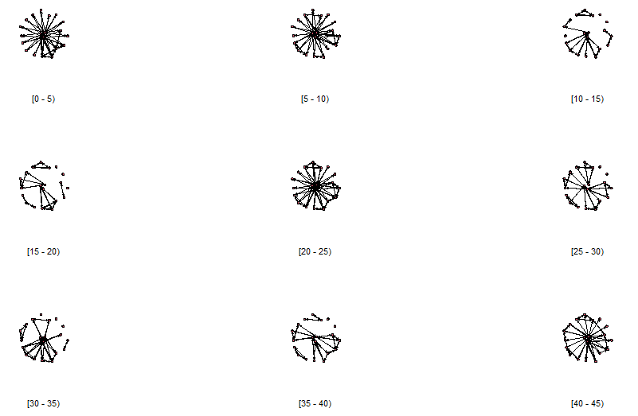

Welcome
Until now, the tutorials have focused on the analysis of static networks, that is: networks that do not change. The networks you considered were stable over time (or stable enough to be considered to be stable) and analyzed that. You learned how to visualize the networks, calculate vertex-level statistics, edge-level statistics, graph-level statistics, and perform statistical tests on the networks and built statistical models of networks. That’s a lot, you’ve done a lot already in this course.
At the same time, this is only the beginning of the journey. There are very many topics, models, and approaches left. In this tutorial, we are going to look at one extension of networks: networks that change over time. There are many names for this type of network, and we will call them temporal networks in this tutorial.
There are many different kinds of temporal networks and you can do a great many things with this type of data.
In the lecture, you learned how to apply ERGM’s to temporal networks. These models deal with a set of repeated observations of a network. For example, you can look at collaborative projects between organizations and measure the network once every month (or quarter, or year, of whatever is appropriate for your study at hand). Here, you do not know exactly when each edge started or ended, you only know what it is like when you measure it. Of course, this requires the assumption that your data are stable enough to justify measuring only every other month, quarter, year, or whatever frequency you adopt in your study. In many cases, this works quite well.
In this tutorial we will consider a specific type of temporal network: a network where
you know the starting and ending times of each edge (where edges are allowed to start and end multiple times during the observation period);
you know the starting and ending times of each possible vertex (and vertices are allowed to join and leave the network multiple times during the observation period);
the attributes of the edges are potentially dynamic (but may be static as well), and you record at what time edges have what value;
the attributes of the vertices are potentially dynamic (but may be static as well), and you record at what time vertices have what value;
the time points follow a meaningful scale and can be integers or continuous values.
You will find that we can build on a lot of the things you have already learned in this course, both conceptually and programming-related. At the same time, thinking about dynamics is hard for everybody, and you will find you will have to rethink some of the earlier concepts you learned in the context of static networks.
In this tutorial, we will make a first start with considering this type of data.
Ready for the adventure? Let’s get started!
Let’s do some time travel!
Buckle up!
Before we start our time travel, we need to make sure we have our belts on, have enough toilet paper with us, and our teeths brushed.
Let’s check if we are ready for take-off.
R Version
You need to have installed R version 4.1.1 (or higher) and this tutorial is going to check it for you. Please hit the Run Code button.
check_R()R Studio Version
You need to have installed RStudio version 2021.9.0.351 or above. Let’s check by clicking Run Code:
check_RStudio()Packages
You need to have a few packages installed to ensure safe travels. Click the Run Code to check. It will check whether you have the required packages installed and will attempt to install any missing packages in case there are any (or it will advise you to upgrade SNA4DS).
check_pkgs()Lift off!
And you are ready for lift off! Let’s blast into space.
IGNITION!
Temporal network data
The example we will use throughout this tutorial is based on data gathered by Daniel McFarland, a really nice and really smart colleague with whom we have an active research collaboration.
The data set we use here is of the interactions between teachers and students in a classroom for a single 45-minute lesson. McFarland actually coded many classes and many lessons, and we are going to focus on one such network.
In this data set, a classroom had 18 pupils and two instructors (ie. the regular instructor and a guest instructor). Hence, there are 20 vertices in the network. Several attributes were coded of the vertices: gender and role, these are constant. Further, for the edges the type of interaction (“task” and “sociable”) is coded and the weight of the interaction (somewhat arbitrarily assessed by the coder).
The researchers wanted to understand the interaction dynamics in this classroom and coded the network of conversation throughout the lesson. Each conversation has a “sender” (ie. the person talking) and a “receiver” (ie. the person(s) talked to).
The class is an economics class composed of 11th and 12th graders. On this day, economics has two teachers. The first is the usual teacher and the second is a businessman who donates his time a couple days a month to assist the class with their lesson on stock investments. After a minute of undefined class time, the two teachers prescribe collaborative group work and assist students in conducting it. The students are assigned groups within which they are to study the stock market and make mock investments they can follow over time. The groups compete with each other over the course of the semester to see who can make the greatest profit.
Anyway, let’s look at the data. It is available for you under the name classroom.
If we would think this was a regular network object, we would look at it like this:
network::print.network(classroom)Do you notice it has attributes that have the suffix “active”?
Let’s plot it:
plot(classroom)How about some basic measures:
sna::gden(classroom)
sna::components(classroom)
sna::centralization(classroom, FUN = sna::betweenness)And look at some of the attributes:
network::list.edge.attributes(classroom)
network::list.vertex.attributes(classroom)
network::get.vertex.attribute(classroom, "gender")This all works.
But wait, where’s the dynamics? Why does this even work? And what do these measures even mean, considering that these are temporal networks?
R packages
The classroom network is different from a static network, in that it contains information on when edges and vertices are active and in that it allows values to change over time. At the same time, the data object is built in the same manner as the network object you have become used to. All R packages that belong to the statnet suite of packages are mutually compatible, which is why network::list.edge.attributes(classroom) and sna::gden(classroom) worked, even though classroom is a temporal network.
In this tutorial, we will use three new packages, all coming from statnet.
networkDynamicmanages temporal networks, similar tonetworktsnaimplements network measures, similar tosnandtvimplements the visualization of temporal networks, in a way that is somewhat similar tosna::gplotornetwork::plot.
These are the three packages we will use in this tutorial.
Rather than the object being of class network, the temporal network is of class networkDynamic. So, what happens when we run sna on an object of class networkDynamic? Well, it treats the network as static and discards its temporal features. This can be useful when you want to get a idea of the overall network, but it does provide you with a biased understanding of how the interactions in the network evolve.
Same thing with plot. Using the network or sna implementation of plot will plot a static representation, discarding temporal changes.
networkDynamic
Now, let’s look at the object as a temporal network object.
classroomOK, so it looks similar to a network object, but with additional traits.
One way to look at the data is by turning it into a data.frame:
as.data.frame(classroom)You see that each edge now has temporal information. The most important are:
- onset: the starting time of the edge
- terminus: the ending time of the edge
- tail: the sender (in a directed network): the starting vertex of the edge
- head: the receiver (in a directed network): the ending vertex of the edge
The other columns of the data.frame are automatically created by networkDynamic.
There are many ways to create a dynamic network object. The general function is networkDynamic::networkDynamic() and you can feed it many different types of input, such as:
- a static network representation
- a
data.framelike the one above (this is called adata.framewith edge spells), optionally extended with edge attributes - a
data.framethat has the onset and terminus values for each vertex (this is called vertex spells), optionally extended with vertex attributes - a
data.framethat contains the times at this edges (edge toggles) or vertices (vertex toggles) turn on and off - a list of networks observed at consecutive time periods
- various other kinds of inputs
As you can see, there are many ways in which temporal networks can be created and various kinds of inputs can be combined. If you need to construct such a network, you can consult the help for the function in R. Also, Claudia and I can assist you. However, for this course, we will not focus on this part.
Manipulating networkDynamic objects
Since networkDynamic is built to be compatible with the network package, many of its functions will be familiar to you. You should easily be able to extract vertex attributes or edge attributes. But now, the values of these attributes may vary over time. Hence, we need to specify for what time period we want our info. Can you figure out what these function calls do? I suggest you play around with them a bit, to familiarize yourself with how this works. Check the help if you want more detail.
networkDynamic::list.vertex.attributes.active(classroom)
networkDynamic::get.vertex.attribute.active(classroom, "gender", at = 1)
networkDynamic::get.vertex.attribute.active(classroom, "gender", onset = 0, terminus = 49)
networkDynamic::list.edge.attributes.active(classroom, at = 1)
networkDynamic::list.edge.attributes.active(classroom, onset = 0, terminus = 49)
networkDynamic::get.edge.attribute.active(classroom, "active", at = 1)Now, let’s say you are interested in what happens in the first minute of the lesson. There are two ways to do this.
First, networkDynamic::network.extract extracts the part of the temporal network for the time period you are interested in.
net_extract <- networkDynamic::network.extract(classroom, onset = 0, terminus = 1)
as.data.frame(net_extract)
class(net_extract)At time 0.125 person 14 addresses person 12, and is responded to at 0.250. Then, person 18 makes a comment to person 12 as well (at 0.375) and also gets a response (at 0.500). Person 12 is apparently popular, as person 1 addresses him immediately after at 0.625 and gets a response at 0.750. Then, finally, other interactions ensue in the classroom, starting at 0.875 when 14 addresses 17.
Alternatively, you can collapse what happens in that first minute into a consolidated static network.
net_collapse <- networkDynamic::network.collapse(classroom, onset = 0, terminus = 1)
as.data.frame(net_collapse)
class(net_collapse)You can see this is now a static network, since it only includes the edges without any time information. The class of the object is now network.
SO, if you wanted to compute the number of components for each quarter of an hour, this would be an appropriate way to do so (although you could consider cleaning the data a bit during the process):
net_1 <- networkDynamic::network.collapse(classroom, onset = 0, terminus = 14.99)
net_2 <- networkDynamic::network.collapse(classroom, onset = 15, terminus = 29.99)
net_3 <- networkDynamic::network.collapse(classroom, onset = 30, terminus = Inf)
sna::components(net_1)
sna::components(net_2)
sna::components(net_3)Measures over time
You just computed components across a couple of intervals, using the sna package on collapsed sub-networks. You can also make this process simpler by using the tsna package. This package has a function tsna::tSnaStats that allows you to compute any measure from the sna package on a series of sub-networks. You do this as follows.
tsna::tSnaStats(classroom, snafun = "components", time.interval = 15, aggregate.dur = 15)This collapses the network into intervals. At each step of 15 (time.interval) it extracts data of length 15 (aggregate.dur). So, the function creates the sub-networks from time [0, 15), [15, 30), [30, 45), [45, 49) and then applies the sna function components to each sub-network.
You get the same results as above (but now you have four intervals instead of three before).
This creates interesting ways to analyze the evolution of the network. For example, you can compute how the density of the network develops. Below, compute the density of the network for blocks of 5 minutes and plot how it develops.
tsna::tSnaStats(classroom, snafun = "gden", time.interval = 5, aggregate.dur = 5)The tsna package implements several measures. Let’s calculate betweenness centralization at times 0, 5, 10, et cetera, each time over a period of length 5 minutes. Then plot the result (adapt the code below to do it).
betws <- tsna::tSnaStats(classroom, snafun = ...,
time.interval = 5, aggregate.dur = 5,
FUN = ...,
cmode = "directed")
...tsna::tSnaStats(classroom, snafun = "centralization", time.interval = 5, aggregate.dur = 5,FUN = sna::betweenness, cmode = "directed") |> plot()Can you interpret what you see? What does the plot say about the dynamics over the interaction in this classroom during the lesson? Pretty clear, right?
Duration
In static networks, edges are present or not (and can vary in their value). In temporal networks, edges are sometimes “on” and at other times “off”. When we have access to longer duration longitudinal network data sets, we can examine networks in terms of temporal characterizations of edge activity without first chopping the network up into bins. For example, what are the average durations of edge activity?
edgeDuration <- tsna::edgeDuration(classroom, mode = "counts")
summary(edgeDuration)
plot(edgeDuration, type = "l")Since we specified mode = "counts", this tells you how many times the edge occured during the observation time (of course, you can also specify a time interval you want to consider, rather than the entire data set). The function also offers you the option to calculate how much time an edge was active. However, since the edges in this particular data set have no time length (ie. they all have a duration of 0, see the previous “networkDynamic” section where you extracted the data.frame of this graph), the total time each edge is active would also be 0. If we had coded durations as well, we could totally do this.
What does this plot tell you about the interactions in this classroom?
Edge durations can tell us the relative rates at which individual edges are active, but what if we want to know how active the vertices are across their relationships? The tsna::tiedDuration function provides a vertex-level aggregation of the amount of time each vertex is “in a relationship”.
tsna::tiedDuration(classroom, mode = 'counts')Again, if durations had been coded, we could have measured this in terms of minutes.
Feel free to make a plot of this as well, potentially a line plot or a histogram, or a density plot (or another plot you might find informative or fun to try out here).
Do you notice there are some zeroes in here? Hmm, that is odd, because I know for sure that person 2 did engage in conversation (again, look back at the data.frame in the “networkDynamic” section). Check the help function for tsna::tiedDuration and find out why person 2 has a zero here and why this is actually correct.
You probably also noticed that the amount of talking (which is what is measured in this network) is definitely not equally divided. Could it be that this has to do with some vertices being instructors and the others being pupils? Let’s find out.
data.frame(type = network::get.vertex.attribute(classroom, "type"),
duration = tsna::tiedDuration(classroom, mode = 'counts'))Ah, that explains it!
(also: see how you can combine functions from different packages together)
Number of active edges over time
Recall that this is a network of how a classroom session unfolds in a economics lesson. There will be times when there is a lot of talking (when students work in subgroups on assignments and all discuss the assignment) and times when talking activity is more focused (such as when an instructor is talking to the group or a student is presenting a solution).
One way of looking into some of the dynamics is to consider how many edges are active at any given time. Actually, since the durations are all 0 here and the lesson is likely to progress in blocks of time, let’s break up the lesson into a series of brief segments and count the number of edges per time segment.
The tsna has a function to do this, but I really don’t like its implementation for the data we have here. So, let us use a function we programmed ourselves and included in the SNA4DS package for you.
plot(SNA4DS::count_edges_in_interval(classroom, number = 50),
ylab = "edges per time point")You can play around with the number of time segments, here we broke up the timeline into 50 equal-sized time segments, but you can do more or fewer of them.
You can clearly see that there are three periods where a lot of edges are active, and most periods the network just “murmurs on.”
This counts the number of edges active in each time segment, so that is the amount of interacting in the classroom. This may include a lot of going-back-and-forth between some of the same pupils, so it is also useful to look at how many unique pairs of students are conversing in each time segment. In other words: does conversation occur throughout the classroom or mainly in vary talkative dyads? If the former, the two plots should overlap considerably. If the latter, they will be different. Comparing the plots (or the raw numbers, without the plots) will help you to get a grasp of what is happening in the various parts of the lesson.
plot(SNA4DS::count_unique_edges_in_interval(classroom, number = 50),
ylab = "unique edges per time point")The plots are very similar. It looks like the conversing activity in the network is driven by general activity of edges, not so much by some edges hijacking the conversation. (although you could certainly compute a measure for that as well)
Temporal paths
In static networks we frequently measure distances using the shortest paths. In temporal networks, we need to consider the sequence of edge timing when computing allowable ‘journeys’ through the network. We call these temporal paths. The tsna::tPath function calculates the set of temporally reachable vertices from a given source vertex starting at a specific time.
An example will make this clearer. Let us look at the paths from vertex 12, within a brief time period from 0 to 0.9. Extract the temporal network for that time period and display the edge activity as a data.frame:
networkDynamic::network.extract(classroom, onset = 0, terminus = 0.901) |>
as.data.frame()As you see, vertex12 is first spoken to by vertex14 at 0.125 and then speaks to vertex14 at 0.250, et cetera. If vertex 12 had information to share, where could it reach between 0 and .9 and how long would it take?
You determine that as follows:
tsna::tPath(classroom, v = 12, direction = "fwd", start = 0, end = .9)$tdist
tsna::tPath(classroom, v = 12, direction = "fwd", start = 0, end = .9)$gstepsHere, we consider the network for a short period: 0 to 0.9. You can, of course, consider any time period you like.
We focused on paths starting at vertex 12 (v = 12). You see that it takes 0.750 minute before node 1 is reached. Indeed, starting from time 0, only at 0.75 does vertex 12 contact vertex 1. This only takes a single step, you see this also in the gsteps output.
Starting at time 0, it takes until time 0.875 that information from vertex 12 reaches vertex 17. This actually takes 2 steps: vertex 12 connects with vertex 14 at 0.250, who then connects with vertex 17 at 0.875.
There are many vertices that can not be reached from vertex 12 within the time segment considered. They have value Inf.
Just think of passing networks on the soccer pitch. For example: how many passes does it take before our most valuable offending player is reached? Is the passing pattern performed within a particular given amount of time? Et cetera.
These are temporal paths.
(note that above we considered “forward temporal paths”, but you can also consider other directions of flow, such as how long it takes for others to reach a specific vertex)
We can plot the temporal paths, to make it more visual. Let’s do that for these paths.
FwdPath <- tsna::tPath(classroom, v = 12, direction = "fwd", start = 0, end = .9)
tsna::plotPaths(
classroom,
paths = FwdPath,
displaylabels = FALSE,
vertex.col = "white",
edge.label.cex = 1.5
)The focal vertex (vertex 12) is shown as a bigger red dot. The possible temporal paths from vertex 12 are shown in red and the big red numbers are the times it takes from vertex 12 to establish that edge.
Quite straightforward, really, although it make take you some time to wrap your head around temporal data.
Now, play around with this function a bit. Try other time segments and other vertices. Note that, if you wanted to check for backward paths (ie. paths that end in vertex 12, rather than start there), you need to add type = 'latest.depart' to the function call, because the default settings of the function are not compatible with backward paths, unfortunately (you will get a message about that if you forget).
Network visualizations
In the beginning of the course, you learned how to visualize static networks. Now, let us consider some ways to visualize how networks evolve over time.
A first obvious way is to collapse the network into smaller time segments and plot these the networks across these segments. We created a function for this and included that in the SNA4DS package.
The function is called SNA4DS::plot_network_slices and takes a few arguments: number is the number of equal-sized time segments you want to divide the interval between start and end in. The argument digits can be useful to round the way the time intervals are printed in the output (otherwise, there may be a lot of decimals and that is just not useful).
Let us plot the network across time using 9 time segments. (note that this code has already pre-run for layout purposes in this tutorial)
SNA4DS::plot_network_slices(classroom, number = 9,
start = 0, end = 45,
digits = 3)
Nice, right?
Well, the technology underneath these tutorials makes the plots way too small, so that is why this R chunk was not interactive for you. But if you were to run this from the console, the plot should be nicely sized.
ndtv
You can also make dynamic visualizations, using the ndtv package. This package offers a range of visualizations for this type of of network data. Unfortunately, the way it has been designed requires you to load the package into your session, using library(ndtv). As you will recall from the beginning of the course, we always strongly advise you against this practice. However, you will get all kinds of awkward errors if you do not. It is possible to “hack” the package so you do not have to load it, but that is beyond this course (and should not be necessary in the first place).
There are two steps in creating a dynamic visualization in ndtv: you first run ndtv::compute.animation, which determines coordinates and other aspects of the dynamic plot. Second, you run ndtv::render.d3movie, which, you guessed it, renders the actual movie.
Actually, as long as you are satisfied with the location of the nodes and the granularity of the animation, you only need to run ndtv::compute.animation once and can then experiment with different settings in ndtv::render.d3movie.
But if you want to use a different network layout algorithm or make an animation of a different time interval or use different time steps, you need to run ndtv::compute.animation with those new settings and then generate your animation.
Let’s make an animation now. The code below should open a new browser window that shows the animation. At the bottom, you will find a button to make it run. You can pause, fast forward, et cetera. Also, there is a slider underneath the animation that allows you to manually go through the animation.
# step 0: painfully, we have to load the package into our session
library(ndtv)
# step 1: compute the settings
ndtv::compute.animation(classroom, animation.mode = "kamadakawai",
slice.par = list(start = 0, end = 45,
aggregate.dur = 1,
interval = 1, rule = "any"))
# step 2, render the animation
ndtv::render.d3movie(classroom, usearrows = TRUE, displaylabels = FALSE ,
bg = "#111111",
edge.col = "#55555599",
render.par = list(tween.frames = 15,
show.time = TRUE),
d3.options = list(animationDuration = 1000,
playControls = TRUE,
durationControl = TRUE),
output.mode = 'htmlWidget'
)There are many arguments you can use to tweak the animation, and we can’t possibly discuss all of them here. If the animation moves too fast for you, set animationDuration to a higher value. Or click on the three horizontal lines in the upper-right of the animation window, next to your animation, and change the duration there. Note that these lines are black and so is your background, so you may not actually be able to see them. In that case, there are two ways to find them:
- change the background to white, by removing the line
bg = "#111111" - search with your mouse in the upper right corner of the animation window, until you see the shape of your cursor change.
You can also output to an html widget or even a movie file. Here, we will not focus on these, check the help file (or shoot us an email) if you need help customizing the visualization.
And, of course, you can play with the settings here as well, to get some practice.
We will show you two more versions of this plot, so you get some idea of what you can do. First, let’s color the vertices according to whether the vertex is a pupil (“blue”) or an instructor (“red”). And we will also size the vertices according to their degree. Here is one way of doing this:
# create a vector with colors
node_color <- rep("blue", network::network.size(classroom))
node_color[network::get.vertex.attribute(classroom, "type") == "instructor"] <- "red"
# create a vector with degrees
node_degree <- sna::degree(classroom)
# animation settings do not change, no need to do those again
# render the animation
ndtv::render.d3movie(classroom, usearrows = TRUE, displaylabels = FALSE ,
bg = "#111111",
edge.col = "#55555599",
vertex.cex = node_degree/12, # new line
vertex.col = node_color, # new line
render.par = list(tween.frames = 15,
show.time = TRUE),
d3.options = list(animationDuration = 1000,
playControls = TRUE,
durationControl = TRUE),
output.mode = 'htmlWidget'
)Finally, I want to keep each vertex in the same place. The moving around of vertices is informative (because at every time point the optimal visualization shows clearly which vertices are more central than others within that time frame), but you lose the ability to focus on specific
vertices.
We do this by first determining coordinates for the vertices and then add these to the network object as attributes that remain unchanged throughout the time period.
Then, we specify animation.mode = "useAttribute" to tell the algorithm to use the “x” and “y” attributes for the coordinates. Since these do not change, vertices remain in the same place.
Below, we set the coordinates by asking the kamadakawai algorithm to find an optimal layout for the network as a whole. But you can also manually set these coordinates the way you like them. Or you can change the locations of vertices at specific time points, whatever you want. Below, we will keep the vertices in one place for the entire animation. In order to make this happen, we have to run ndtv::compute.animation again.
Also, I will make the vertex labels readable making their names visible when you click on a vertex.
# compute coordinates and add them to the network, constant throughout
coords <- ndtv::network.layout.animate.kamadakawai(classroom)
networkDynamic::activate.vertex.attribute(classroom, "x", coords[, 1],
onset = -Inf, terminus = Inf)
networkDynamic::activate.vertex.attribute(classroom, "y", coords[, 2],
onset = -Inf, terminus = Inf)
# new animation settings
ndtv::compute.animation(classroom, animation.mode = "useAttribute",
slice.par = list(start = 0, end = 45,
aggregate.dur = 1,
interval = 1, rule = "any"))
# render the animation
ndtv::render.d3movie(classroom, usearrows = TRUE, displaylabels = FALSE ,
bg = "#111111",
edge.col = "#55555599",
vertex.cex = node_degree/12,
vertex.col = node_color,
vertex.tooltip =
paste("Vertex", network::get.vertex.attribute(classroom, "vertex.names")),
render.par = list(tween.frames = 15,
show.time = TRUE),
d3.options = list(animationDuration = 1000,
playControls = TRUE,
durationControl = TRUE),
output.mode = 'htmlWidget'
)
Feel free to play around with the settings and adjust the plot further to your liking. If you want to open the animation in a separate browser window, then remove the line output.mode = 'htmlWidget' (this will not work inside your tutorial, but should work when you work interactively from RStudio).
We landed safely, back in our own timezone!
That was an adventurous ride through time! You safely landed your time capsule, great work!
With these tools, you can now unravel quite complicated network patterns, taking into account how they unfold through time. You gained the ability to travel forwards and backwards through time.
Does it feel like this?

Couple this with your knowledge of temporal ERGM’s, and you can formulate and test quite advanced hypotheses of how interactions unfold, whether it relates to humans, groups, organizations, countries, computers, viruses, trains, traffic, online discussion fora, criminal behavior, sports, and so much more.
Just realize that this is “only” an introductory course to network analysis and there are so many more models and measures to add to your bag of knowledge and so many more applications you can use it for. We have only scratched the surface, but you already have very powerful tools under your belt and already know more about SNA than most data scientists. Use this to your advantage!
We wish you all the best and hope you will enjoy using your network analysis power to do cool research, with data, that matters! Let’s goooooooooooo!